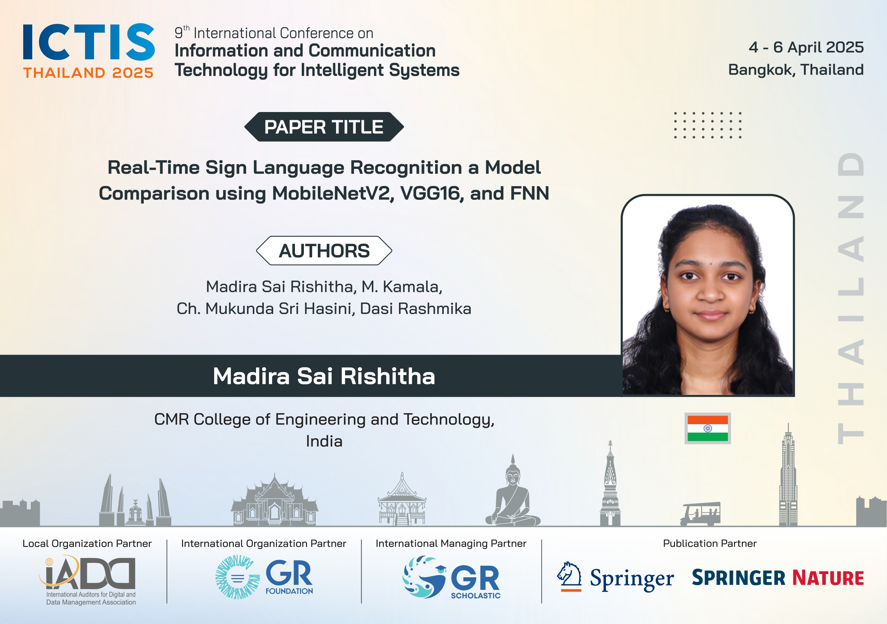

<!doctype html>
<html lang="en">
  <head> 
    <meta charset="utf-8">
    <meta name="viewport" content="width=device-width, initial-scale=1">
    <title>Blog</title>
    <link rel="stylesheet" href="common_style.css">
    
    <script src="https://cdn.jsdelivr.net/npm/bootstrap@5.3.3/dist/js/bootstrap.bundle.min.js"></script>
</body>
</html>
    <link href="https://cdn.jsdelivr.net/npm/bootstrap@5.3.8/dist/css/bootstrap.min.css" rel="stylesheet" integrity="sha384-sRIl4kxILFvY47J16cr9ZwB07vP4J8+LH7qKQnuqkuIAvNWLzeN8tE5YBujZqJLB" crossorigin="anonymous">
  </head>
  <body>
    <nav class="nav nav-underline flex-column flex-sm-row">
      <a class="flex-sm-fill text-sm-center nav-link"  href="index.html">HOME</a>
      <a class="flex-sm-fill text-sm-center nav-link " href="aboutme.html">ABOUT </a>
      <a class="flex-sm-fill text-sm-center nav-link"  href="projects.html">PROJECTS</a>
      <a class="flex-sm-fill text-sm-center nav-link active" aria-current="page"  href="blog.html">BLOG</a>
    </nav>
    <section class="text-center my-5">
  <h2 class="fw-bold" id="blogtitle">My Blog</h2>
  <p class="text-muted" id="blogtitle">Sharing my experiences, achievements, and learning journey.</p>
</section>
  <div class="container my-5 blog-container">
  <div class="row">
    <!-- Left: Blog Titles -->
    <div class="col-md-4 blog-list">
      <div class="card p-3 mb-3">
        <h5 class="fw-bold mb-1">ICTIS 2025 Publication</h5>
        <p class="text-muted small mb-2">April 2025 • 6 min read</p>
        <button class="btn btn-outline-dark btn-sm" type="button"
          data-bs-toggle="collapse" data-bs-target="#blog1"
          aria-expanded="false" aria-controls="blog1">
          View Blog
        </button>
      </div>

      <div class="card p-3 mb-3">
        <h5 class="fw-bold mb-1">Starting My Master’s Journey at SUNY Albany</h5>
        <p class="text-muted small mb-2">August 2025 • 6 min read</p>
        <button class="btn btn-outline-dark btn-sm" type="button"
          data-bs-toggle="collapse" data-bs-target="#blog2"
          aria-expanded="false" aria-controls="blog2">
          View Blog
        </button>
      </div>
    </div>

    <!-- Right: Blog Display Area -->
    <div class="col-md-8 blog-display position-relative" id="blogAccordion">
      <div class="collapse show" id="blog1" data-bs-parent="#blogAccordion">
        <div class="card card-body">
         <h4 class="fw-bold">ICTIS 2025 Publication – Real-Time Sign Language Detection</h4>
        <p>
          I had the honor of presenting my research paper titled 
          <strong>“Real-Time Sign Language Detection using Deep Learning and Computer Vision”</strong> 
          at the <strong>ICTIS 2025 International Conference in Bangkok</strong>.
          The project introduces a real-time sign language detection system integrating 
          MediaPipe and deep learning for accurate gesture recognition.
        </p>
        
        <h6 class="section-title">Research Objective</h6>
        <p>
          The aim is to bridge the communication gap between hearing-impaired and hearing individuals 
          through a real-time, accessible system that translates hand gestures into text and speech.
        </p>

        <h6 class="section-title">Key Highlights</h6>
        <ul>
          <li>Presented at ICTIS 2025, Bangkok</li>
          <li>Achieved 98.96% test accuracy and 90% real-time accuracy</li>
          <li>Used MobileNetV2, VGG16, and a hybrid FNN + MediaPipe model</li>
          <li>Focused on accessibility and assistive technology</li>
        </ul>

        <h6 class="section-title">Takeaways</h6>
        <p>
          This research deepened my understanding of applied AI and real-time vision systems 
          while enhancing my confidence in presenting at an international level.
        </p>
        </div>
      </div>

      <div class="collapse" id="blog2" data-bs-parent="#blogAccordion">
        <div class="card card-body">
         <h4 class="fw-bold">A New Chapter – My Master's Journey at SUNY Albany</h4>
        <p>
          Beginning my Master’s in <strong>Computer Science</strong> at the 
          <strong>University at Albany, State University of New York (SUNY Albany)</strong> 
          marks an exciting new chapter in my academic and professional life.
        </p>
        

        <h6 class="section-title">Why SUNY Albany ? </h6>
        <p>
          SUNY Albany’s strong research environment and diverse learning community 
          make it an ideal place to deepen my expertise in AI, computer vision, 
          and intelligent systems. I’m eager to collaborate on projects that 
          blend innovation with real-world impact.
        </p>

        <h6 class="section-title">What I Look Forward To</h6>
        <ul>
          <li>Engaging in hands-on research in AI and machine learning</li>
          <li>Exploring computer vision and assistive technologies</li>
          <li>Collaborating with diverse peers and mentors</li>
          <li>Building a foundation for impactful research and innovation</li>
        </ul>

        <h6 class="section-title">Personal Reflection</h6>
        <p>
          Transitioning from undergraduate studies in India to a new academic environment in the U.S. 
          is both thrilling and transformative. I’m grateful for the opportunity and 
          excited to make the most of this journey — one project, one discovery at a time.
        </p>
        </div>
      </div>
    </div>
  </div>
</div>


    <footer class="text-center py-3 mt-5">
      <div class="container">
        <p class="mb-0">© 2025 SAI RISHITHA MADIRA. All rights reserved.</p>
      </div>
    </footer>
  </body>
</html>